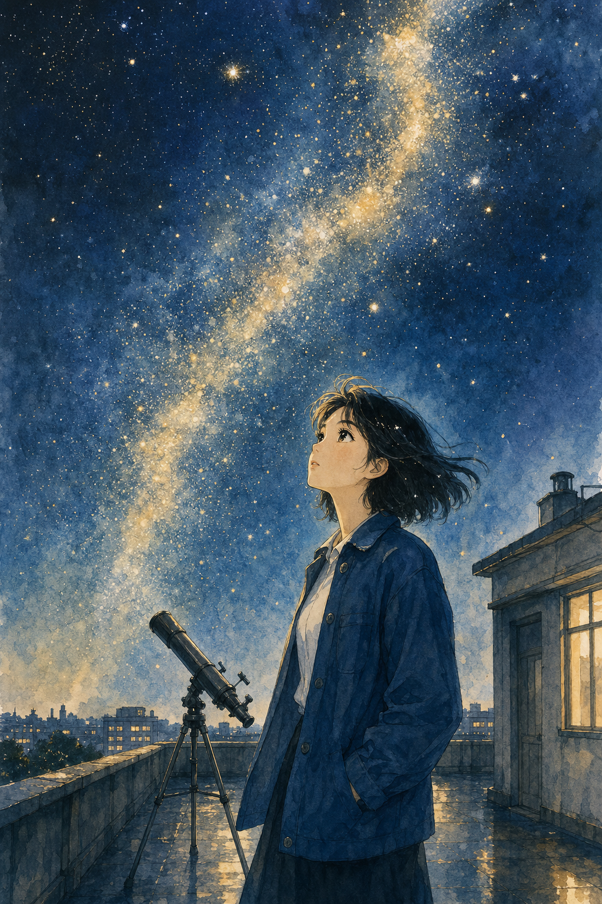
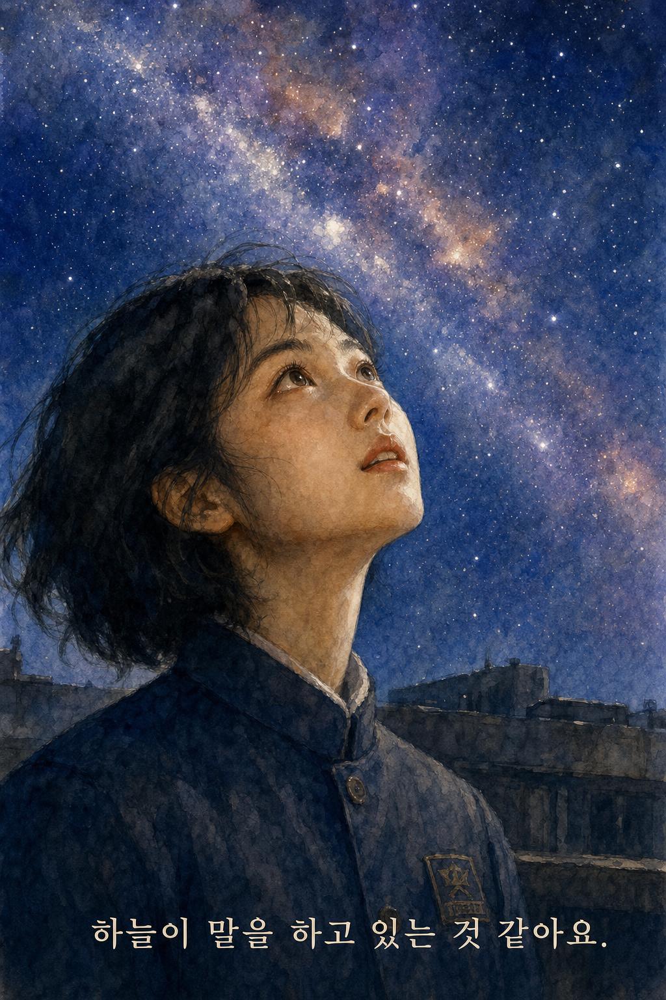
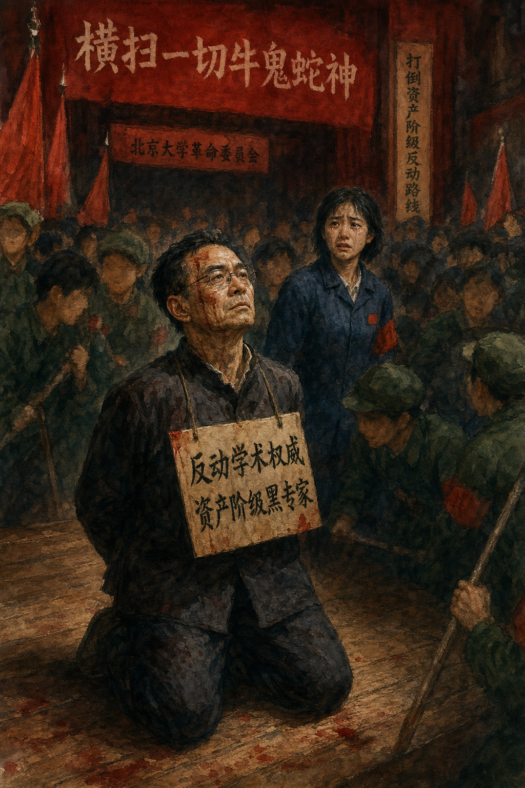
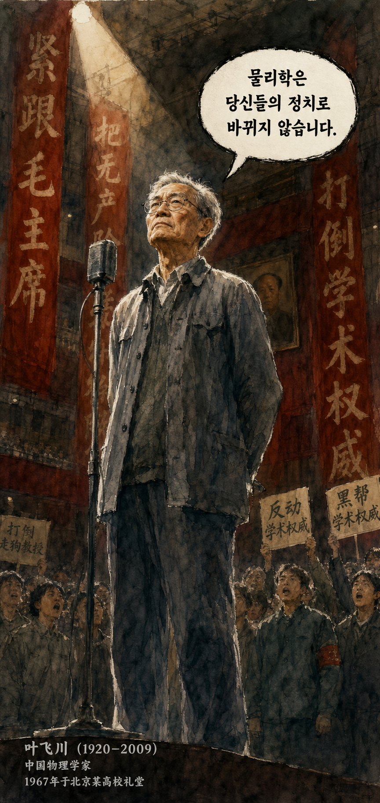
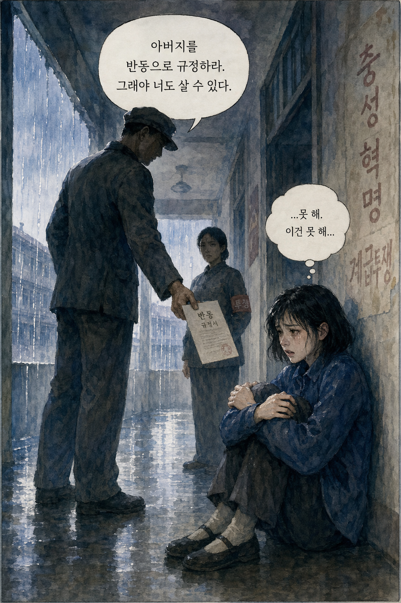
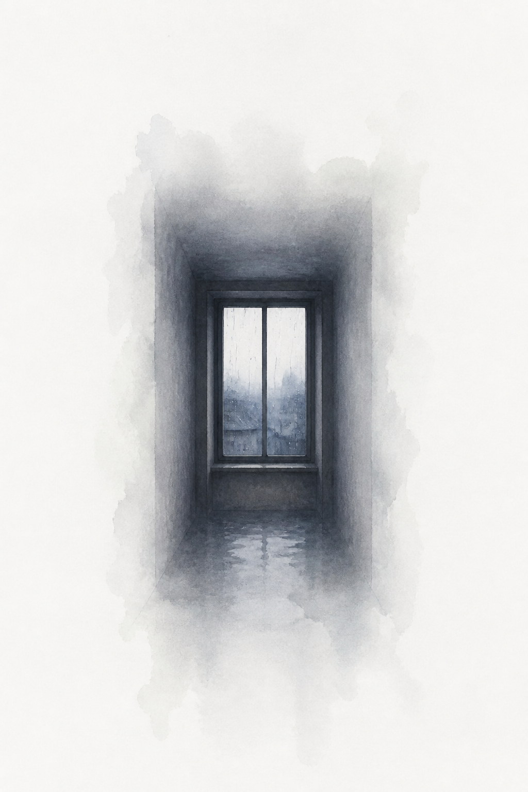
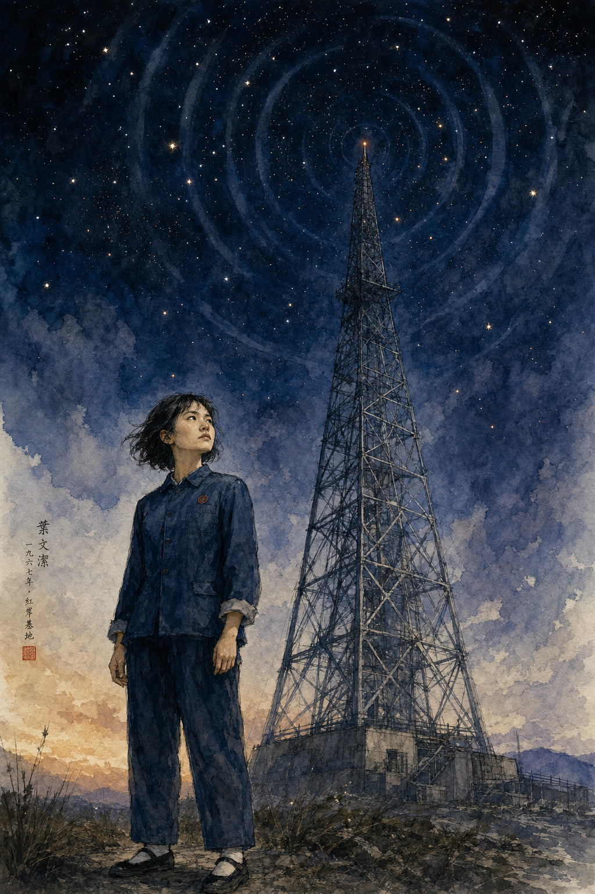
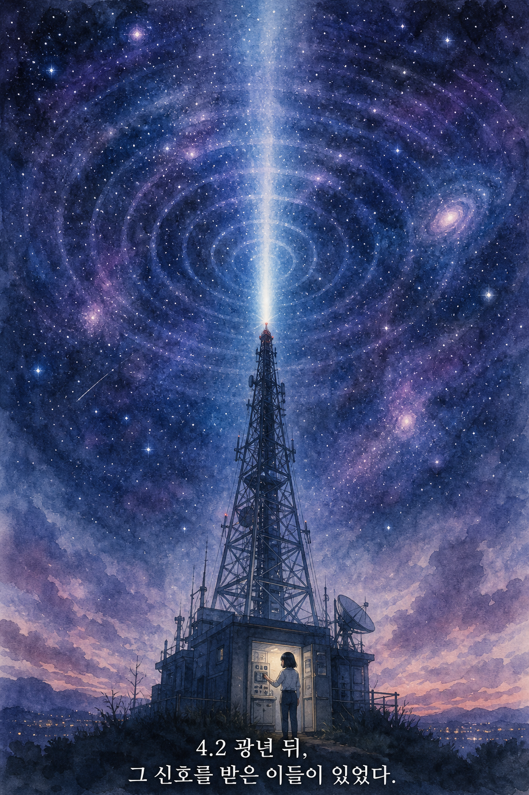

p.1 — 별이 쏟아지는 밤, 기숙사 옥상

p.5 — "하늘이 말을 하고 있는 것 같아요."

p.6 — 붉은 날, 강당의 홍위병들

p.10 — "물리학은 당신들의 정치로 바뀌지 않습니다."

p.13 — 아버지를 고발하라는 종이

p.18 — 침묵. 3초간의 여백.

p.19 — 라디오 망대, 차가운 결의

p.23 — 우주로 향하는 전파